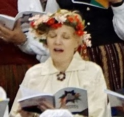

|
Journal - "Rise Sun"
Here I sing, as it is life-force. Here I "hold the sunshine in my lap", my songbook, right where the light of my heart chakra and soul reside. So are the wise words of my ancestors from over 4000 years ago. Some things are timeless.

I sang in the mass choir of 1000 singers at the 15th Canadian-Latvian Song and Dance Festival in Toronto over the summer 2019. Singers from Canada, America, Europe, Australia and of course Latvia. We sang songs of unity, inclusiveness, universal love and of getting through life, the good the hard times. Latvians and the Baltic nations are very small countries wedged between world superpowers. To survive we sing these power songs of the soul. We sing together, in 7 part harmony, in synchronicity. It is natural, pure and the ultimate feeling of connection. It is loving medicine that the universe channels for us to use ourselves and as a group.
Indeed, the universe provides love and guidance; and like a loving mother, she tests us. She does not coddle or gift us. So was the situation in the mass choir performance. A storm, a city block power outage for about 90 minutes of the concert. We continued. The audience continued.
(description from youtube video reposted below)
Rise, Sun!
Composer: Raimonds Tigulis
Lyrics: Rasa Bugavičute-Pēce
Performed at the XV Canadian Latvian Song & Dance Festival, Toronto,
July 6, 2019
The lyrics in this song ask the Sun to rise, to teach us clarity of mind
& inner strength, & to pierce through the darkness to unite the
Latvian people.
During the Mass Choir Concert, the entire city block blacked out, &
the hall went dark. However, Latvians don’t need microphones, amps, or
speakers to share the music they love so much. Lit only by the dim glow
of emergency lights powered by backup generators, we sang through the
darkness, undeterred, just as our ancestors sang for strength &
freedom under the darkness of occupation.
Rise, Sun! Pierce the darkness! Unite Latvia!
English Lyrics (trans. Inkflower):
I am the bosom of the Earth
You are my sun
So did the Thunder God decide
The flow of fate
Teach me clarity of mind
Teach me the strength of the Earth
As Fate herself had given
Winding the scroll of life
Rise, Sun, shine brightly!
Adorn the cornfield, adorn the yard
Rise, Sun, pierce the darkness!
Make our land sacred
I am the roof of the sky
You are my Sun
So did the Thunder God decide
The flow of fate
Teach me peace of the soul
Teach me the strength of the sky
As Fate herself had given
Winding the scroll of life
Rise, Sun, shine brightly!
Adorn the cornfield, adorn the yard
Rise, Sun, pierce the darkness!
Make our land sacred
Rise, Sun, shine brightly!
Adorn the boy, adorn the girl
Rise, Sun, pierce the darkness!
Unite the Latvian people!
May you all find clarity of mind, strength of the Earth, as you journey the winding scroll of life. Let the Sun pierce the darkness!
Anda :o)
Journal Home |